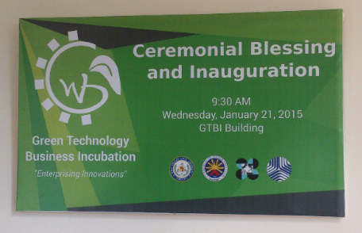
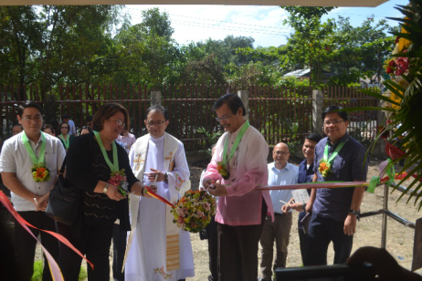
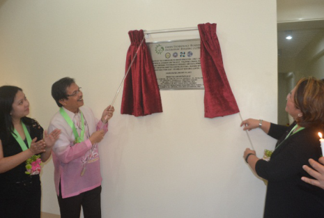
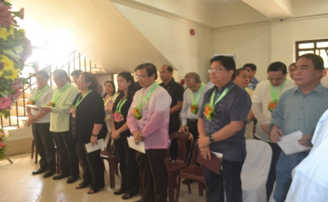
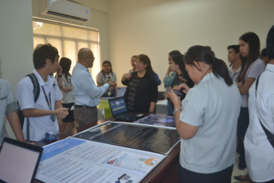

GTBI Ceremonial Blessing and Inauguration
01.21.2015

Leading on its way in the promotion of green technology, West Visayas State University set the bar yet again with the establishment of the Green Technology Business Incubation Facility inside its campus.

Inaugurated last January 21, 2015, Green Technology Business Incubation Facility aims to provide an enterprising service through scientific and technology innovations that will assist Small and Medium Enterprises, start-up businesses as well as individuals who has creative and innovative business ideas to start, develop, cultivate and improve their businesses and ideas and ensure their place at the forefront of the business community in Iloilo and of Western Visayas as a whole.

The said event was attended by different personas led by the DOST-PCIEERD Executive Director Dr. Rowena Cristina L. Guevarra, DOST R06 Regional Director Engr. Rowen R. Gelonga, WVSU President Dr. Luis M. Sorolla Jr, LGU representatives such as former Cabatuan Mayor Ramon Yee who represented Governor Arthur Defensor, and Jay Victor Mabilog who represented his brother, Mayor Jed Patrick Mabilog, several President and representatives of State University and Colleges and other distinguished guests from media and private sector.

The GTBI project was pushed through the collaboration of Department of Science and Technology-Philippine Council for Industry, Energy and Emerging Technology, Research and Development PCIEERD), Technology Resource Center (TRC), Commission on Higher Education (CHED) and WVSU. It was made possible through the efforts and under the administration of Dr. Pablo E. Subong and Dr. Luis M. Sorolla, Jr., WVSU President, Dr. Gerard L. Penecilla GTBI Project Leader, Dr. Joel T. De Castro, Director of IICT, Ms. Russell M. Pili, Chief STTD, PCIEERD, Mr. Abelardo F. Valdez, Department Manager TACD TUCSG, TRCMs. And MS. Cheryl L. Ortega, Dev. Mgt. Officer III, TRC.

The said event was also attended by the IICT fourth year students who presented their studies to the guests.